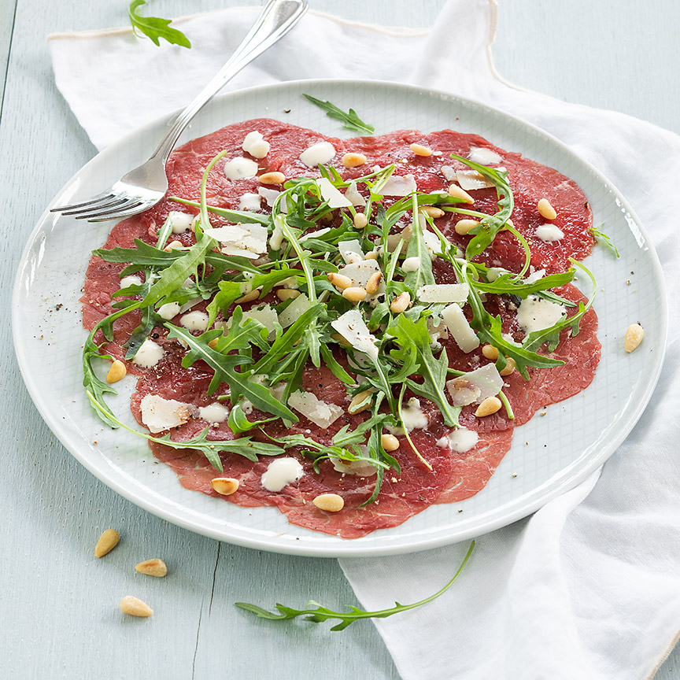

carpaccio
Makkelijk en heerlijk klassiek Italiaans voorgerecht van carpaccio met Parmezaanse kaas, pijnboompitten, rucola en een heerlijke dressing.
ingrediënten
250 gram dun gesneden ossenhaas/carpaccio
4 eetlepels grof geraspte Parmezaanse kaas.
4 eetlepels geroosterde pijnboompitten.
handje rucola
peper en zout
truffelsaus of truffelmayonaise
bereidingswijze
- Verdeel de carpaccio over 4 borden. Verdeel een beetje rucola er over en garneer met wat pijnboompitten en Parmezaanse kaas. Bestrooi met een snufje peper en zout en druppel er een beetje truffelsaus of mayo over.
